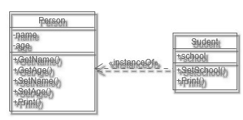

The syntactic analysis of the Toba language involves a classification function of textual elements within a source code by isolating and identifying different groups (identifiers, numerical constants, strings, comments, operators, special characters and keywords). The compiler analyzes these groups to recognize and form command primitives. The compiler then uses a primitive transformation function to exploit the compound functions and prioritise the calculations to initiate machine execution. Any unbalanced delimiters (parentheses, brackets, inverted commas, etc.) as well as the abnormal use of separators or any other non-conformity with the primitives listed below would force the compiler to generate a syntax error or could also cause the immediate termination of a program without any information for the developer.
Identifiers are characterised by a string of characters represented in ASCII code defining the name of a variable. The maximum number of characters is limited to 64. The characters allowed to define a variable are as follows:
[ a → z ] [ A → Z ] [ 0 → 9 ] [ _ ]
It should never start with a number (an alpha-numeric character). Any characters not matching the above list will be ignored and no syntax errors will be generated by the compiler.
Numerical constants define a number that will be assigned to a numerical variable, so it will have the role of initializing and typing a variable. Constants accept integer, floating-point or hexadecimal notation. An integer value will be defined only using alpha-numeric characters ( 0 → 9 ); a real variable defined with the same characters but using ". "as separator of the integer part and the decimal part. These numbers can be noted scientifically using a superscript using the character "E or e" optionally followed by the sign "+ / -" the syntax will then be :
[ number ] [ E/e ] [ ± ] [ exponent ]
It is possible to use hexadecimal notation; the number must begin with the character "0" followed by the character "X or x" followed by a sequence of alpha-numeric characters and/or characters including the letter "a/A" up to the letter "f/F" used to express a number in base 16. The syntax is as follows:
0 ] [ X/x ] [ 0 → 9 / a → f / A → F ]
The syntax checks associated with the definition of a constant are not carried out by the Toba language; if this formulation is not respected no error will be generated by the compiler.
Character strings are a sequence of data encoded in ASCII, forming what is known as text. In the Toba language, this data is interpreted by means of a sequence of letters delimited by inverted commas " '' ".
A texte : [ id ][ = ][ ‘’ ][ string ][ ‘’ ]
A character string can contain escape characters that mark the beginning of a sequence of characters that must be interpreted differently: a control character (\n, \r, ...). Toba uses the following characters :
---------------------------------------------------------------------
Escape Description
---------------------------------------------------------------------
\t Insert a tab in the text at this point.
\b Insert a backspace in the text at this point.
\n Insert a newline in the text at this point.
\r Insert a carriage return in the text at this point.
\f Insert a formfeed in the text at this point.
\' Insert a single quote character in the text at this point.
\" Insert a double quote character in the text at this point.
\\ Insert a backslash character in the text at this point.
---------------------------------------------------------------------
Sometimes it may be necessary to present one string in another. A concrete example would be to want to execute dynamically defined Toba code in text form containing itself a display routine. To do this, the syntax proposes the use of a double apostrophe " ' ' " or the escape character " \" " to delimit it.
A composite text : [ id ][ = ][ ‘’ ][ [ [ ‘ ‘ ][ string ][ ‘ ‘ ] ] ][ ‘’ ]
A composite text : [ id ][ = ][ ‘’ ][ [ [ \" ][ string ][ \" ] ] ][ ‘’ ]
It is simple to create a multi-line text that can be defined as a constant. This text will be written in a natural way without worrying about line breaks or other such coding. All that is needed is a delimitation by inverted commas. At the risk of getting an undefined error, it is also prudent to check the proper delimitation of the sub-string.
The online declaration makes it possible to create a variable and its contents on a single line of code in a natural way. It is a container definition procedure. The standardised writing of these variables is defined by listing each of the data to be listed (variables, numerical constant, character, etc.) using a separation character enclosed between two delimiting characters.
[ id ][ = ][ (/[ ][ variable1 ][ , ][ variable2 ][ , ][ … ][ )/] ]
In the case of numerical or multi-purpose lists, the comma "," is the separator. An open parenthesis on the left and a closed parenthesis on the right "(...)" acts as a delimiter in the case of a multipurpose list and the square bracket "[...]" is reserved for the enumeration of unique elements: a number or a character.
The operations (mathematical, concatenation, ...) all have a very similar syntactic scheme: a result is defined as an identifier followed by the assignment operator itself followed by an operator involving one or two operands (identifier, numerical constant, string or list):
Binary operation : [ id ][ = ][ operand1 ][ operator ][ operand2 ]
Unary operation : [ id ][ = ][ operator ][ operand ]
Square brackets are used to access a sub-element of a data item via an index. For a variable defined on a single dimension, the data is read by syntactic concatenation of the name of the variable to be read, followed by the index itself delimited by square brackets "[ ]". In the case of a multidimensional variable, the group (bracket plus index) must be accumulated successively until the desired reading level is reached.
Read access: [ id ][ = ][ id ][ [ ][ index ][ ] ]
Write access: [ id ][ [ ][ index ][ ] ][ = ][ variable ]
Access to n dimensions : [ id ][ [ ][ index ][ ] ][ [ ][ index ][ ] ][ ...
All internal functions or functions created by the developer as well as classes are executed by a call. The call consists of an identifier followed by an open-closed parenthesis group containing any parameters represented by a sequence of variables separated by commas:
Routine call with return : [ id ][ = ][ id ][ ( ][ param ][ ) ]
Routine call with no return : [ id ][ ( ][ param ][ ) ]
Parameter setting: [ variable1 ][ , ][ variable2 ][ , ][ … ]
The definitions (function, object, enumeration, import, ...) are organised as follows: A keyword identifies the type of declaration made followed by a definition operator followed by an identification field:
Definition : [ keyword ][ : / :: ][ id ][ … ]
These optional syntax tools are an aid to the formatting of the source code and have no influence on the execution of a programme. The ";" character is used to associate several commands on the same line of code. Conversely, line segmentation is performed using the " \ " character.
Comments are used to annotate the code for clarity. They also allow the code to be tested by activating or deactivating certain regions defined by the developer. There are three types of comments:
"// ... \n ": This symbol is to be placed at the beginning of the line to be commented, it closes implicitly with the first line break found.
"/* ... */ ": These delimiters are used to comment a multi-line code block.
" @ ... @ ": These delimiters are used to comment a multi-line block of code.
Blocks allow a subset of the control to be executed to be represented visually and intrinsically, depending on loops, conditions, functions, objects and methods. The braces " { } " are used to delimit this area. By convention, and optionally, the code inside the block is indented, i.e. shifted to the right, in order to obtain greater visual comfort and better structure the code. Block characters behave in a similar way to the ";" character at the end of the line described above.
Operators are symbols (composed of one or two ASCII characters) used to instruct the computer to perform mathematical operations or other transformations. An operation involves at least one operand (an identifier or other constant) and one operator. According to algebraic rules, putting an operation in brackets defines it as having a high priority and even higher than the natural priority of some operators such as multiplication and division. This priority is also called "precedence" in computer science. This order of calculation must be respected and results in the internal use of an algorithm called "Shunting-yard ( Edsger Dijkstra )" which converts a command line of the Toba language written by the developer into "reverse Polish notation ( Jan Lukasiewicz )" which can be used by the machine and which will be executed directly by the compiler.
An operator is defined by its precedence but also by its parity and associativity. A binary parity results in an operation between two operands, a unary parity is an operator applied to a single operand. The operation can be carried out from the operand located on the left of the operator towards the operand located on the right or conversely which defines the associativity.
The table below presents each of the operators available for the Toba language along with their usage characteristics.
|
Precedence |
Operator |
Description |
Parity |
Associativity |
|
1 |
() |
Function call |
Unaire |
Left |
|
[] |
Access by indexing |
|||
|
. |
Access by attribute |
Binary |
||
|
: :: |
Definitions |
|||
|
2 |
+ - |
More and less |
Unaire |
Right |
|
! ~ |
Non logical and binary |
|||
|
3 |
* / % |
Multiplication, division, and remainder |
Binary |
Left
|
|
4 |
+ - |
Addition and subtraction |
||
|
5 |
<< >> |
Left and right binary shift |
||
|
6 |
< <= |
Relational operator less than or equal |
||
|
> >= |
Relational operator superior or equal |
|||
|
7 |
== != |
Relational operator of equality and inequality, see "equal". |
||
|
8 |
& |
Binary AND |
||
|
9 |
^ |
Binary OR exclusive |
||
|
10 |
| |
Binary OR inclusive |
||
|
11 |
&& |
Logic AND |
||
|
12 |
|| |
Logic OR |
||
|
13 |
$ |
Concatenation |
||
|
14 |
<> |
Containment test, see "inside". |
||
|
15 |
= |
Assignment |
||
|
16 |
, |
Sequencing |
The table is sorted according to operator precedence. The higher the operator's priority, the lower the precedence. The operators listed above as well as the following internal functions are taken from the standard mathematical library of the C language.
Any arithmetic operator or mathematical function (numerical or binary) is only applicable to numerical variables of the NUMTYPE type. To carry out an operation on a character it is necessary to carry out a double conversion: (see the chapter Variables in the Conversion section).
STRTYPE → NUMTYPE ( num ) ; NUMTYPE → STRTYPE ( str )
sin ( angle ): Calculates the sinus. The "angle" argument is of the unit NUMTYPE type expressed in radians. The return is a unit NUMTYPE type value.
cos ( angle ): Calculates the cosine. The "angle" argument is of the unit NUMTYPE type expressed in radians. The return is a unit NUMTYPE type value.
tan ( angle ): Calculates the tangent. The "angle" argument is of the unit NUMTYPE type expressed in radians. The return is a unit NUMTYPE type value.
abs ( num ): Calculates the absolute value of a number. The "num" argument is of the unit NUMTYPE type. The return is a positive unit NUMTYPE value.
ceil ( num ): Returns the closest higher integer number. The "num" argument is of the unit NUMTYPE type. The return is a NUMTYPE value as an integer.
floor ( num ): Returns the nearest lower integer. The "num" argument is a unitary NUMTYPE argument. The return is a NUMTYPE value as an integer.
trunc ( num, n ): This function allows you to truncate the decimal part of a number at a given position. "num" is a unitary NUMTYPE variable that you wish to truncate, "n" is a unitary NUMTYPE variable corresponding to the truncation position.
exp ( num ): Returns e ( Euler number ≈ 2,71828 ) high to the requested power. The "num" argument is of the unit NUMTYPE type. The return is a NUMTYPE type value.
log ( num ): Calculates the natural logarithm (based on e). The "num" argument is of type NUMTYPE unit. The return is a NUMTYPE value.
pow ( num ): Raises a number to a given power. The "num" argument is of the unit NUMTYPE type. The return is a NUMTYPE type value.
sqrt ( num ): Calculates the square root. The "num" argument is of type NUMTYPE unit. The return is a NUMTYPE value.
rand ( min , max ): This function produces a random number bounded
by an interval. The "min" and "max" arguments are unitary
NUMTYPE variables in integer form defining the generation limits of the number
[min ; max[. The return is an integer NUMTYPE type value.
A variable is defined by its identifier, its type, its size in memory and its data. It is declared, converted and destroyed by assigning it a value. The categories of variables available in the Toba language are divided into two distinct groups: dynamic variables for data storage with implicit typing and static variables for structuring a program and executing routines.
The variables concerned are data structures containing a set of ordered elements accessible by their index. They exist in the form of a sequence of numbers with a unique type or in a more complex form with no size or type restriction or each element may itself be a container. These data are accessible in read and write mode thanks to the indexing syntax rule (see the "Syntax" chapter). The variables categorised in this way are NUMTYPE, STRTYPE or MAPTYPE type variables.
This category includes variables that have the ability to execute a parameterizable and structured set of lines of code using their identifier and a list of arguments. They can behave in two different ways: as passive (a single data item) or active (called) variables. The variables concerned are FUNCTYPE and OBJTYPE.
These variables have a specific declaration prototype using a type keyword followed by a definition operator and an identifier reserved and global to the whole programme which does not accept any redefinition, reassignment or deletion. The variables concerned are FUNCTYPE, OBJTYPE and ENUMTYPE.
[ NUMTYPE ]
This type is characterised by a single numerical value or a single value list. It is defined by the assignment of a decimal and integer constant with or without scientific notation and also includes conversion from a hexadecimal number. ( a = 10, a = -3.86, a = 0x4c, a = [0,1,2], a = 1e9 ). ( see "Syntax" ). This type of variable is defined internally in accordance with the IEEE 754 encoding standard. A digital variable therefore naturally accepts floating data and can correctly represent an integer within certain limits (see the paragraph "Memory representation"). A conversion is possible from a character string using the "str" function. To find out whether a variable is of this type, use the "isnum" function. This variable is constructed by assigning a simple numerical variable, a comma-separated number sequence delimited by square brackets or by using the "array" function.
[ STRTYPE ]
A variable of this type is a representation of a string of characters or a single character recognised by the delimitation of inverted commas. ( a = "A", a = "a text", a = "here is a ''text\'' in a text"). Special characters ( \r \n \t ) are implicitly converted. ( a = "a text" → ). For this reason, it is recommended not to use the "\" character but rather "\" or "/" as a separator in the definition of a file path. A conversion is possible from a number by using the "num" function. To find out if any variable is of this type, use the "isstr" function. It can also be created using the "array" function.
[ MAPTYPE ]
This type is able to list all other types of variables including its own. Its particularity is that it can be multi-dimensional and multi-typed, making it a versatile variable that can be used within diverse and complex algorithms. Linked to its internal schema and compared to other containers (numerical variable and string of characters), its performances are lower in terms of access. To find out if any variable is of this type, use the "ismap" function.
[ FUNCTYPE ]
This type is used to store information about the function it represents (command sequence, list of input parameter and its output value). A function is declared using a strictly defined prototype which gives it the particularity of being write-locked and globalized to the whole program. Any copy of this variable becomes modifiable. ( see " Functions " ).
[ OBJTYPE ]
This type represents a "class". It has the same characteristics as a FUNCTYPE type variable, however, the result of its execution will always be its own instance defined as an OBJITYPE type variable. ( see "Objects" ).
[ OBJITYPE ]
This variable characterizes the instance of an object. It is generated by calling a variable of type OBJTYPE or directly available in the body of an object via the variable "self". Only this type of variable is able to access the attributes of an object by syntactically adding the operator ". "(see the "Syntax" chapter in the "Operations" section). ( see "Objects" ).
[ ENUMTYPE ]
It is a static enumeration variable that is write-protected, containing the information related to the variables it enumerates and globalises. ( see "Enumerations" ).
[ ARCHTYPE ]
This variable is the result of the compression in memory of any type of variable presented in this chapter. This variable can be modified via the internal function "archive" which has two modes of operation: conversion of a variable into its reduced form or into its original form. ( see "Archiving" ).
[ NULLTYPE ]
This type represents a variable with no data and no memory allocation. It is used in many situations such as the neutral return of an internal or user-created function, the deletion of another variable (see construction/destruction) or simply used to create a variable whose type will not be known until later. It is defined using the internal function "null ()".
Any Toba variable will always be machine encoded in a floating signed manner using 64 bits (double). The internal typing is invariant and cannot be changed during execution.
The Toba language converts floats to integers automatically internally for use as loop increments or in Boolean tests. It is important to know at what point in the program the conversion is necessary; for this reason the developer is advised to perform the conversion manually using the available rounding functions: "floor" or "ceil" (see chapter Operator and mathematical functions). The use of integers on a floating base is subject to some restrictions that the user should be aware of. The table below shows the operating limits of a Toba variable according to its internal coding (an integer embedded in a float or the float itself):
|
32-bit coding (float) |
min |
max |
|
Integer |
-16777216 |
+16777216 |
|
Floating |
1.175494351e-38 |
3.402823466e+38 |
|
64-bit coding (dual) |
min |
max |
|
Integer |
-90071992547409900 |
+90071992547409902 |
|
Floating |
2.2250738585072014e-308 |
1.7976931348623158e+308 |
According to the IEEE 754 standard, all integers up to 24bits can be converted to a floating point (32-bit) value and vice versa without loss of precision or 53bits for a floating point (64-bit) value.
For any programming language, the construction of a variable can be broken down into two steps: typing and assignment. In Toba language, as in many other high-level languages, only the assignment is necessary because typing is implicit by deduction of the type of the assigned value. Any reassignment overwrites the original and implicitly converts the variable (except FUNCTYPE, OBJTYPE and ENUMTYPE). For container variables: two construction methods exist. The first uses the internal "array" and "map" functions, which are generally dedicated to large data volumes, and the second is carried out by explicitly writing the content to be assigned on the same line of code, bringing simplicity and clarity when defining a variable. To build any other variable, please refer to the dedicated chapter.
Construction by function :
array ( size , value ): This internal function allows you to create NUMTYPE or STRTYPE type data, the "size" argument defines the size of the variable created, i.e. the number of elements composing it, the "value" argument defines the value with which this variable will be initialized, depending on the type of this argument, the return variable will be of NUMTYPE or STRTYPE type.
|
A simple constant ( cst = 0 ) |
cst = array ( 1, 0 ) |
|
A huge digital board |
bigarray = array ( 1e6, 0 ) |
|
A huge text |
bigtext = array ( 1e6, "A" ) |
|
A repeat |
rep = array ( 2, [ 1, 2, 3 ] ) |
map ( size , value ) : Constructs a variable of type MAPTYPE. The "size" argument defines the size of the created variable. The "value" argument defines the value with which this variable will be filled.
|
A list of one item ( one = ( 0 ) ) |
one = map (1, 0 ) |
|
A voluminous list of paintings |
multi = map ( 1e6, [ 1, 2, 3 ] ) |
|
A repeat |
rep = map ( 2, [ 1, 2, 3 ] ) |
Single-line construction :
This type of construction is more intuitive and practical
for defining digital containers, matrices, trees or texts. In Toba language, an
array of a single element is equivalent to a numerical constant ( a = 10 = [
10 ] ) however the online definition of this type of array will
generate a syntax error by the compiler.
A MAPTYPE variable created online from a single element ( a = 10 = ( 10 ) ) will be considered as a number in brackets and therefore a valid numerical constant. In order to create a list of a single element, it is mandatory to use the construction by function :
a = map ( 1, 10 ).
|
A simple constant |
cst = 3.14 |
|
A string |
mytext = "Hello world!" |
|
A multi-line string ( Carriage returns are implicit ) |
mytext = "This is a multiline text with TobaLang" |
|
A list of characters |
listchar = [ "a", "b", "c" ] |
|
A list of numbers |
listnum = [ 1, 2, 3, 1e6 ] |
|
A string list |
liststr = ("abc", "def", "ghi" ) |
|
A tree structure |
tree = ( 1, ( 11, ( 111, 112 ) , 12, ( 121, 122 ) ) ) |
|
A matrix |
Matrix = ( 11, 21, 31 ),\ ( 12, 22, 32 ),\ ( 13, 23, 33 )) |
Destruction:
null ( ): This feature allows you to create an empty variable. It returns a value of type NOTYPE whose size is equal to zero with no internal memory allocation. A writeable data with a variable of this type will therefore be destroyed.
To perform a data transfer between two entities, there are two internal functions "tobyte" and "frombyte" allowing conversion between a variable and a list of bytes. They can be used, for example, with the file system functions "fswritef" and "fsreadf" to save a variable to the hard disk.
|
Save a container variable |
Myfile = "storage.txt
fswritef( Myfile, tobyte ( [ 1, 2, 3 ] ) ) fswritef( Myfile, tobyte ( ( 1, 2, 3 ) ) ) ) fswritef( Myfile, tobyte ("123" ) ) |
|
Manipulating an object instance If the object variable "MyObj" is renamed or if its structure is modified (addition of a property or method, renaming, etc.), the "frombyte" function will fail. |
obj:MyObj(){
self. att1 = [ 1, 2, 3 ] [ 1, 2, 3 ] self. att2 = ( 1, 2, 3 )
func:MyMethod(self){ self. att1 = 1 self. att2 = 2 } } Mobj = MyObj( ) Myfile = "storage.txt fswritef( Myfile, tobyte( Mobj ) ) Mobj = frombyte( fsreadf( Myfile ) ) |
tobyte ( var ): This function converts a variable into a list of bytes. The "var" argument is of any type except (NULLTYPE or ARCHTYPE) and represents the data to be converted. The variable must not be or contain an archive (MAPTYPE, OBJITYPE). It returns a list of type STRTYPE.
frombyte ( var ): This function creates a variable from a list of bytes. The "var" argument is a STRTYPE variable. It returns a copy of the variable converted with the "tobyte" function. The conversion may fail if the byte list represented by the input variable "var" does not match the expected format or if the declarative scheme of the converted variable has been modified in the source code (see chapter "User errors").
size ( var ): An internal function allowing to know the number of elements constituting a container variable. The "var" argument is the container to be inspected. It returns a simple numerical value.
sizeof ( var ): An internal function to find out how much memory space a variable occupies. The "var" argument is a variable of any type. It returns a simple numerical value representing the number of bytes that make it up according to its internal typing.
The following internal functions are used to test the type of a variable. The argument " var " is a variable of any type and the return is a simple numerical variable equal to 1 if the typing is otherwise equal to 0.
isnum ( var ): Test if a variable is a numerical NUMTYPE.
isstr ( var ): Test if a variable is a text STRTYPE.
ismap ( var ): Test if a variable is of type MAPTYPE or a list.
isobj ( var ): Test if a variable is of type OBJTYPE or an object.
isinst ( var ): Test if a variable is of type OBJITYPE or an object instance.
isfunc ( var ): Tests whether a variable is a function or a FUNCTYPE.
isenum ( var ): Test if a variable is of type ENUMTYPE or an enumerator.
isarch ( var ) : Test if a variable is of type ARCHTYPE or an archive .
strnum ( var ): Converts a number into a text representation. The "var" argument is a NUMTYPE variable of unit size. The function returns a variable of type STRTYPE. The transformation is carried out by the standard C language function "sprintf".
|
A hexadecimal number |
print( strnum( 0x400 ) ) => "1024" |
|
An integer number |
print( strnum( 3.14 ) ) => "3.14" |
|
A floating number |
print( strnum( 10 ) ) => "10" |
numstr ( var ): Converts a number represented as a string of characters (see "Numeric constants") into the corresponding numeric variable. The "var" argument is a STRTYPE variable of any size. The function returns a variable of type NUMTYPE unit if the conversion was carried out correctly, otherwise an empty variable. The transformation is carried out by the standard C language functions "atof" and "strtol".
|
A hexadecimal number |
print( numstr( "0x400" ) ) => 1024 |
|
An integer number |
print( numstr( "3.14" ) ) => 3.14 |
|
A floating number |
print( numstr( "10" ) ) => 10 |
num ( var ): Converts the type of a string variable to numeric. The "var" argument is a STRTYPE variable of any size. The function returns a copy of "var" typed NUMTYPE.
str ( var ): Converts the type of a numeric variable into a string. The "var" argument is a NUMTYPE variable of any size. The function returns a copy of "var" typed STRTYPE without checking or modifying its contents.
The internal format of a Toba variable is IEEE 754 double precision, the comparison of two numerical values must manage the uncertainty inherent in this typing. To do this, any comparator is intrinsically coded according to this particularity by using the constant ( ULP " The weight of the smallest bit significatif of the mantissa of a flottant " Arithmetic flottante, Vincent Lefèvre, Paul Zimmermann, INRIA ) allowing to evaluate if two floating values are close enough to be considered as equivalent. This type of comparison only applies to numerical variables and STRTYPE variables are compared in a strict manner (bit to bit). A simple conversion of a numeric data into a string can therefore be used to perform a classic comparison using the internal function "str".
equal ( var1, var2 ): This internal function allows to compare two variables in terms of equality. The arguments "var1" and "var2" are any type of variable. It returns a simple numerical value equal to 1 if the two variables are equal or 0 if they are not.
This function is internally overloaded by the mathematical operators ( == ", " != " ).
inside ( var1, var2 ): This internal function allows to test if a variable is contained in another one. The arguments "var1" and "var2" are any type of variable. It returns a simple numerical value equal to 1 if "var1" is contained in "var2" otherwise 0.
This function is internally overloaded by the mathematical operator " <> ".
find ( var, tofind ): This internal function searches the positions of all occurrences of a sub-data in a container. The "var" argument is a variable of type ( NUMTYPE, STRTYPE or MAPTYPE ). The " tofind " parameter is of any type and represents the sample to be searched. It returns a variable of type NUMTYPE containing the increasing list of indexes found or an empty variable when nothing matches.
|
find( [1,1], [1,2,3,4]) |
null( ) |
|
find( "hijabcdefghij", "hij") |
[0,10] |
|
func:tofind(){print (tofind)} find( (1,tofind,3),tofind) |
1 |
|
find( (1,null( ),3),null()) |
1 |
The comparison of inferiority or superiority of two sets of numerical values is subjective and depends on one or more criteria defined by the user according to his needs. For this reason, mathematical comparison operators ( < , ≤, > , ≥, ) are only used on unit variables (see chapter "Mathematical operators and functions").
The following functions only work on homogeneous container variables with comparable data (number, text and map) and without disparity of type. By convention, the data whose size exceeds one unit are compared according to the sum of their component parts.
min ( var ): This internal function searches for the minimum value of a container. The "var" argument is a variable of type (NUMTYPE, STRTYPE or MAPTYPE) consisting of at least two values of the same type. It returns a value typed as the input variable.
max ( var ): This internal function searches for the maximum value of a container. The "var" argument is a variable of type (NUMTYPE, STRTYPE or MAPTYPE) consisting of at least two values of the same type. It returns a value typed as the input variable.
sort ( var ): This internal function sorts the data of a container in ascending order. The "var" argument is a variable of type (NUMTYPE, STRTYPE or MAPTYPE) composed of at least two values and of the same type. It returns a copy of the sorted input variable.
|
sort( (3,2,1)) |
(1,2,3) |
|
sort( [0.00000212,0.00000211,0]) |
[0,0.00000211,0.00000212] |
|
sort( "Toba language sorting me") |
" Taaabeegggggilmnnoorstu" |
|
sort "zzz", "bbb", "aaa") |
("aaa", "bbb", "zzz") |
|
sort( ( word,10)) |
Type error |
reverse ( var ): This internal function reverses the position of each element in a container sequence. The "var" argument is a variable of type ( NUMTYPE, STRTYPE or MAPTYPE ). It returns a copy of the inverted input variable.
insert ( var1, var2, position ): This internal function allows you to insert data into a container at the chosen position. The "var1" argument is a variable of type ( NUMTYPE, STRTYPE or MAPTYPE ). The "var2" argument is of any type and represents the data to be added to "var1" (if "var1" is not of type MAPTYPE then "var2" must be of the same type as "var1"). The "position" is of NUMTYPE type with a unit size corresponding to the container index "var1" or the data "var2" will be inserted. It returns a copy of the transformed input variable.
|
insert ((1,2,3),(4,5,6),1) |
(1,4,5,6,2,3) |
remove ( var, position1, position2 ): This internal function allows you to delete a portion of a sequence within a container. The "var" argument is a variable of type ( NUMTYPE, STRTYPE or MAPTYPE ). "Position1" and "position2" are NUMTYPE, with a unit size greater than or equal to 0 and less than size (var). They limit the area of the "var" container to be deleted ("position1" must always be smaller than "position2"). It returns a copy of the reduced input variable.
replace ( var, position1, position2, revalue ): This internal function allows to replace a portion of a sequence within a container by another data. The "var" argument is a variable of type ( NUMTYPE, STRTYPE or MAPTYPE ). "Position1" and "position2" are NUMTYPE, with a unit size greater than or equal to 0 and less than size (var). They limit the area of the "var" container to be modified ("position1" must always be smaller than "position2"). The "repvalue" argument is of any type and represents the replacement data in "var" (if "var" is not of the MAPTYPE type, then "repvalue" must be of the same type as "var"). It returns a copy of the transformed input variable.
freplace ( var, tofind, torep ): This internal function searches and replaces all occurrences of a container variable. The "var" argument is a variable of type ( NUMTYPE, STRTYPE or MAPTYPE ). The " tofind " parameter is of any type and represents the sample to be searched. The " torep " argument is of any type and represents the replacement data in " var " ( if " var " is not of type MAPTYPE then " tofind " and " torep " must be of the same type as " var " ). If " torep " is of type NULLTYPE then the occurrences of the target will be deleted. It returns a copy of the transformed input variable.
|
Replacement in a painting |
freplace([1,2,3,4,5],[2,3],[-2,-3]) |
[1,-2,-3,4,5] |
|
Replacement in a character string |
freplace("C:\Users\Toba\text", "\", "/") |
"C:/Users/Toba/text" |
|
Deletion of occurrences |
freplace((1,2,3,4,5),(2,3),null()) |
(1,4,5) |
|
Replacement with a null value |
freplace(((1,2),(1,2)),map(1,(1,2)),map(1,null()) |
(null(),null()) |
slice ( var, position1, position2 ): This internal function is used to extract a portion of a sequence from a container. The "var" argument is a variable of type ( NUMTYPE, STRTYPE or MAPTYPE ). The "position1" and "position2" are NUMTYPE type, with a unit size greater than or equal to 0 and less than size (var). They limit the area of the "var" container to be extracted ("position1" must always be smaller than "position2"). It turns over a slice of the input container of size ("position2" - "position1").
split ( var, poslist ): This internal function allows you to compartmentalise the internal data of a container. The "var" argument is a variable of type ( NUMTYPE, STRTYPE or MAPTYPE ). The " poslist " argument is of type NUMTYPE and represents the list sorted in ascending order of positions where the " var " container will be segmented (each position must be greater than or equal to 0 and less than size (var)). It returns a variable of type MAPTYPE resulting from the partitioning.
Accessing an element of a container is done through indexing. This index represents the memory address of the element you wish to obtain. The procedure is identical to many other languages (see "Indexing"). The size of a container will determine the limit values for the index, ( 0 → container size - 1 ). Thus, for a container with a size of ten units, the index can only take a value between 0 and 9. MAPTYPE type containers allow a multidimensional data architecture resulting in the accumulation of N index(es). An overflow of index or dimension value will cause the compiler to generate an error (Index out of range).
Concatenation consists of increasing the size of a container by adding a new value to its right end. It is often used for system file path creation, or in a large number of algorithms using a "stack" and its "push" functionality. The Toba language offers the possibility to use concatenation in two different ways; either through the internal "concat" function or online using the "$" concatenation operator.
|
result = concat ( 1, 2 ) => [1,2]. |
result = 1 $ 2 => [1,2] |
Concatenation is subject to constraints which are linked to the typing of the variables to be glued together. The left operand must be of a nature to contain the right operand; a null variable will be neutral unless it is used to the right of a "MAPTYPE" type variable. These particularities are described in the table below:
|
Item 1 |
Item 2 |
Output |
|
NULL |
ALLTYPE |
Item 2 |
|
MAPTYPE |
NULL |
Item 1 $ Item 2 |
|
NULL |
NULL |
NULL |
|
NUMTYPE |
NUMTYPE |
Item 1 $ Item 2 |
|
NUMTYPE |
STRTYPE |
Error |
|
NUMTYPE |
MAPTYPE |
Error |
The Toba language optimises the use of RAM by offering the user the choice to compress (losslessly) any existing variable within the source code. The language internally uses a single type for the definition of its variables whatever the data to be expressed, which can be a major drawback in some cases (word processing or binary calculation, ...). A default data will always be coded on 32 or 64 bits, the idea is to restrict the data to 4 bits. The resulting operation results in an average gain of 60 % of memory space, with a respectable conversion time. A converted variable will be of the ARCHTYPE type and will be considered as dormant because its data will not be accessible until its next decompression.
archive ( var ): Function dedicated to reducing the contents of a variable in memory. The "var" argument is a variable that can be modified of any type. This function behaves like a switch (archived / decompressed), the mode is automatically defined according to the state of "var"; consequently, any variable will not be able to cumulate the compressions. A resulting variable that has the same or larger memory size than the original version will not be converted and the function will return a copy of the original. To check the status of a variable, the "isarch" test function must be used. It is also possible to quantify the reduction using the "sizeof" property of a variable.
|
Compression |
a=(1,2,3,4,5,6,7,8,9,10,11,12,13,14,15,16,17,18,19,20) a = archive ( a ) |
|
Verification |
ok = isarch ( a ) |
|
Evaluation ratio = 68.2927 %. |
arch = sizeof ( a ) a = archive ( a ) uarch = sizeof ( a ) print ("ratio =",100-(arch/uarch*100),"%") |
The management of the machine memory is simplified in Toba language, any variable reassigned a value will be purged beforehand. Any variable that is alive at the output of the programme will be automatically destroyed. The user can purge a variable manually by assigning it the result of the internal "null" function, however it is advisable not to use it within a loop to avoid adding unnecessary command lines.
garbage ( var ): This function removes temporary or unnecessary variables created to run a program. The variable "var" is a NUMTYPE variable and can only take the following values: (0, 1 or 2). If "var" is 0 (GC_DISABLED) the deletion is disabled. If "var" is 1 (GC_FORCED) the deletion of the variables is forced when this function is called in the source code. If "var" is 2 (GC_AUTO) the deletion of the variables is automated and is carried out at each end of blocking if an increase of the internal memory is detected. This function returns a variable of type NUMTYPE equal to the number of bytes deleted from the memory if "var" is used in manual mode (GC_FORCED) otherwise the return value is a copy of "var". This function is disabled by default and initialized with the value (GC_DISABLED).
The structure of a Toba programme can be divided into two distinct areas: its main body and its routines. The main body of the programme constitutes the entire source file and the routines correspond to the content of functions, objects and methods defined as sub-procedures. A variable is said to be "local" when its scope is limited to one of its two regions, outside of which it will be indefinite. Therefore, a global variable will have no boundaries and will be accessible anywhere in the programme. NULLTYPE, NUMTYPE, STRTYPE, MAPTYPE and ARCHTYPE variables are local; on the other hand a function, object or enumerator and its content will be global variables.
|
enum :eB{b1; b2; b3} a = 10 func :fnc(){ a = 1 } print ( a ) obj :ob(){ self . p1 = fnc self . p2 = a } |
eB, b1,b2,b3 are global a is local fnc is global a is local => 10 ob is global self .p1 contains the fnc function error: a is not defined! |
The transformation of a local variable into a global variable is possible by listing it as presented below :
|
enum :eGlobal{a} a = ( 1, 2, 3 ) func :fnc(){ print ( a ) } |
eGlobal and a are global fnc is global => ( 1, 2, 3 ) |
The initialization of the enumerator requires that each of the variables of the component be of type NUMTYPE or unit STRTYPE. A variable such as " a " of type MAPTYPE must therefore be declared in two stages: globalisation of the variable and assignment of the new value (see " Enumeration "). A globalised variable cannot become local again. ( see "Name space" ).
The conditions enable or disable the execution of a block of code delimited by square brackets according to a Boolean test. The associated operators are "if" and "else". As explained in the section ("Syntax"), the indentation within this block plays no role in the execution of the code. The keyword "else" cannot be used without the keyword "if"; it tests the boolean operation complementary to the "if" that precedes it. In the example below the program will display the number 10 corresponding to the value of "a".
|
a = 10 b = 100 if ( a < b ) { print ( a ) } else @=> if ( a ≥ b )@ { print ( b ) } |
if ( var ): Activation or not of a code block according to a Boolean test. The "var" argument is a variable of type NUMTYPE unit. Nothing is returned.
else: Activation or not of a code block depending on the complement of the "if" operator preceding it. No parameter is requested and nothing is returned. The call of this command must not be followed by brackets.
A loop allows a repetitive task to be performed by executing a group of lines of code enclosed in a block, itself delimited by square brackets, a number of times. From a practical point of view, it can be used to perform processing on all the elements of a container using an increment variable, but also, thanks to an infinite loop, to scan and predict a future event such as pressing a key on the keyboard or an elapsed time, ...
The Toba language offers users three types of loops. The "for" loop dedicated to iterative processes, which allows the developer to set the iteration with its start value, end value and increment step. It returns an increment variable that can be used within the executed block.
|
varinc = for ( start, stop, step ) { the code to be executed is here ... } |
The behaviour of this loop differs according to the value of its arguments. If the "start" value is lower than the "stop" value, the iteration is increasing, if the "stop" value is lower than the "start" value, the index value decreases. If the minimum value is equal to the maximum value, only one iteration will be performed. The example below compares the same functionality in Language C as well as in Toba.
|
Toba |
|
|
i = for ( 0, 10, 1 ) { print ( i ) } }. @>> 0 ,1, 2, 3, 4, 5, 6, 7, 8, 9@ |
i = for ( 10, 0, 1 ) { print ( i ) } @>> 10, 9, 8, 7, 6, 5, 4, 3, 2, 1, 0@ |
|
Language C |
|
|
for ( i = 0 ; i < 10 ; i ++ ) { printf ( ''%i'', i ); } //>> 0 ,1, 2, 3, 4, 5, 6, 7, 8, 9 |
for ( i = 10 ; i >= 0 ; i -- ) { printf ( ''%i'', i ); } //>> 10, 9, 8, 7, 6, 5, 4, 3, 2, 1, 0 |
In order to simplify the use of loops in the reading of a container, there is a variant of the functionality described above. The "foreach" loop inherently knows the size of a container and outputs each value of the component, making it easier and faster to navigate through the container. This loop requires only one argument, the container variable, and returns the current value of the container to the index incremented by 1. The table below shows the syntax of this loop on the left and its equivalent on the right using the "for" loop.
|
value = foreach ( var ) { the code to be executed is here ... } |
inc = for ( 0, size ( var ), 1 ) { value = var[ inc ] } |
The "loop" functionality is an infinite loop corresponding to "while( 1 )" in C language. It requires no arguments and returns absolutely nothing. It eternally executes the code present in the block delimited by square brackets if the developer does not define any stopping criteria.
|
loop { the code to be executed is here ... } |
This type of iteration must be stopped by using the "break" operator. This keyword can only be used within the three loops shown above. All that precedes the "break" is executed until the "break" appears, all lines of code following it will be dropped and the loop will be interrupted. The loop allows the use of certain widely used programming patterns such as "while" or "do while". The examples below show the implementation of these features in Toba language and their equivalence with the C language.
|
Toba |
|
|
@while code@ a = 10 b = 100 loop { if ( a > b ) { break } a = a + 1 } |
@do while code@ a = 10 b = 100 loop { a = a + 1 if ( a > b ) { break } } |
|
Language C |
|
|
//while code a = 10 ; b = 100 ; while ( a > b ) { a = a + 1 ; } |
//do while code a = 10 ; b = 100 ; do { a = a + 1 ; } while ( a > b ) ; |
The keyword "continue" is also available. It must be positioned in a loop and can be used to deactivate all code lines that follow it within the block. As with the "break" keyword, it is natural to use it conditionally ("if", "else") in order to avoid coding unnecessary lines.
for ( start, stop, step ): Loop set. The "start", "stop" and "step" arguments are unit NUMTYPE values. The value of the step must be less than or equal to "start - stop" and greater than 0. It returns a unit iteration variable of type NUMTYPE accessible in reading and writing.
foreach ( var ) : Loop on container. The "var" argument is a variable of the NUMTYPE, STRTYPE or MAPTYPE type. It returns a variable of any type from the "var" container for each of its indices.
loop: Infinite loop. No parameters are required and no values are returned. This command should not be called in parentheses.
break: Stops a loop instantly. No parameters are required and no values are returned. This command should not be called in parentheses.
continue: Continue the iteration without executing the following code. No parameters are required and no values are returned. This command should not be called in parentheses.
This prototype uses the keyword "enum" followed by a definition operator ":" to declare an enumerator (see "Enumeration type") associated with a list of variables: the enumerated. This type of declaration simplifies the creation of a group of automatically assigned constants with a global scope (see "Local / global variable"). An enumeration must be statically declared in the main body of the program outside any block (condition, loop, function, object or method).
An enumerated variable can be assigned any value. To use automatic incrementation, enumerated variables must be initialized with a unit value of type NUMTYPE or STRTYPE.
If none of the declared variables is implicitly assigned a value then the first variable will be 0 and the last variable will therefore be equal to the number of enumerated variables subtracted from 1. By default the resulting type will be numeric.
|
enum: MyEnum { eP0 eP1 eP2 } |
The above example shows how to declare the variable "MyEnum" of type ENUMTYPE composed of three variables (eP0, eP1, eP2) of type NUMTYPE with the values 0, 1 and 2 respectively.
If at least one enumerated variable is assigned a character, and therefore of the STRTYPE type, the variables which follow it will be assigned the next character in the order of the ASCII code, thus
as in the example below (eP1 = ''a'' and eP2 = ''b'' ) while eP0 takes the value 0.
|
enum: MyEnum { eP0 eP1="a" eP2 } |
Functions are generally used to avoid redundancy of widely used lines of code in a program as well as to simplify an algorithm. The Toba language defines a function as an unchangeable, global variable (see "Function type"). The declaration of a function is made with the keyword "func" associated with the definition operator followed by the identifier and any parameters delimited by parentheses. A function must be statically declared in the main body of the program outside any block.
|
func : MyFunctionName ( p0, p1, p2, ...) |
The code of the function to be executed is delimited by the characters " { } ". It must contain only dynamic code (no definition) as explained above.
|
func : MyFunctionName ( p0, p1, p2, ...) { the code to be executed is here ... } |
The "MyFunctionName" identifier used for the declaration is a write-locked variable and therefore cannot be redefined or even destroyed. However, not all copies of this variable within other program data will inherit this restriction. A function is an execution variable that can behave in two different ways: passive, as a simple variable, or active, as it is called. A function in a program can be called at any point in the code, however it cannot be called until it is declared. The function is called by adding brackets after the identifier.
|
MyFunctionName ( 1, 2, 3, ... ) |
The parameters of the function can be any type of variable. A function can have arguments as well as a return value. The keyword "return" followed by the parameter to be returned in brackets defines the data that will be the result of the function call. The Toba language allows the use of only one return command per function, which must be placed at the end of the execution block. This keyword cannot be used at the heart of a condition or a loop. Furthermore, only one variable can be returned.
|
func : MyFunctionName ( p0, p1, p2, ... ) { the code to be executed is here ... return ( onevar ) } onevar = MyFunctionName ( 1, 2, 3, ... ) |
To return a group of variables it is however possible to build a list containing all the data you wish to exit the function.
|
func : MyFunctionName ( p0, p1, p2, ... ) { the code to be executed is here ... return ( var1, var2, var3, ... ) ) } list = MyFunctionName ( 1, 2, 3, ... ) var1 = list [0]; var2 = list [1]; var1 = list [2]; ... |
The functions are executed as soon as possible "on line" (the complete code of this function is inserted in the caller's code) thus avoiding a certain number of operations carried out during compilation and allowing the compiler to optimise the code more easily. There is then a saving in execution time but in return the number of lines of code stored in memory is greater. The "sub-procedure" execution mode is used in the specific case where the data is not known at the time of compilation. Because a function is a variable, it can be stored in a container to be called later. A Toba function can also be passed as an argument to another function to be used as a "callback function".
|
func : Add ( a, b ){ return ( a+b ) } c = Add ( 3, 4 ) |
func : Add ( a, b ){ return ( a+b ) } arr=map (1,Add) c = arr[0]( 3, 4 ) |
|
func : Add ( a, b ) { return ( a + b ) } func : Call ( otherfunc , a, b ) { return ( otherfunc ( a, b ) ) } c = Call ( Add , 3, 4 ) |
Functions have the ability to call themselves. They can therefore be recursive. There is no limitation on the call depth, so it is up to the user to manage how this loop will stop. Since any recursive function can result in an iterative algorithm with the same purpose, it is important to favour the use of loops (for, foreach, loop) for the development of algorithms that require memory usage and/or optimised computing time.
|
func:DeepReplace(data,tf,tr){ data = freplace(data,tf,tr) if(ismap(data)){ i = for(0,size(data),1){ if(ismap(data[i])){ data[i] = DeepReplace(data[i],tf,tr) } } } return(data) } |
The above example shows the use of recursivity to answer a given problem: Being able to replace elements in a MAPTYPE variable in all its depth.
|
data = (1,2,3,(1,2,3,(1,2,3,(1,2,3))))) datar = DeepReplace(data,2,99) /*datar = (1,99,3,(1,99,3,(1,99,3,(1,99,3)))))*/ |
Toba objects are similar to classes (see "Object type"). They are used to associate properties and methods to a variable. The methods are functions assigned only to the created object using its characteristics to perform the desired functionality.
The declaration of an object is similar to that of a function but uses the keyword "obj" itself separated from the identifier and its parameters by the definition operator : " An object must be statically declared within the main body of the program and outside any block. Like each variable declared according to this prototype, "MyObjectName" is global and cannot be modified.
|
obj : MyObjectName ( p0, p1, p2, ... ) |
The body of objects consists of two parts; the declaration of properties that can be described as "constructor" and the declaration of methods. A Toba object does not have a "destroyer". Each member who composes it is public and has its own signature (see "Name space").
|
obj : MyObjectName ( p0, p1, p2, ...) { Properties and initializations are here ... The list of methods is here ... } |
An object is a variable of type OBJTYPE whose behaviour is similar to a function with a passive and an active state. However, in the case of the object, the active state (call of the object with the use of brackets to delimit possible arguments) internally constructs and initializes an instance of the object according to its attributes and gives an initial value to all properties. An object returns a copy of its instance.
|
NewInstance = MyObjectName ( ... ) @ Builds and initializes MyObjectName @ |
An instance gives access to the attributes of an object. It is an OBJITYPE type variable (see "Type instance") represented by the identifier "self" in the body of the object or available externally with the result of the constructor. It will always be succeeded by the access operator ". ».
|
self . MyProperty = onvalue @ Access from inside the object @ NewInstance. MyProperty = onevalue @ Access from outside @
|
An assignment of the variable "self" can only be made within a method.
A property is a public member of the object corresponding to a variable of any type which must be associated with an instance and an access operator ". "access operator to be used internally or externally. A variable defined without a prefix in the body of the object will be local and will therefore not be evaluated as an attribute. A property cannot be initialized and assigned with an instance of the object from which it originates.
A method is a function attached to the object. Like a property, it is a public member controlled by an instance. A method must be declared after the properties and must have as first argument the variable "self". The "in-line" execution mode is disabled. ( see "Functions" ).
|
func : MyMethodName ( self , p1, p2, ... ) { ... } @ Declaration within the object @ self . MyMethodName( ... @ Calling this method within the object @
|
The example below illustrates the classical construction scheme of an object in Toba language with the declaration of properties and methods :
|
obj : MyObjectName ( p0, p1, p2, ... ) { self . MyProperty1 = p0 a property initialized with a parameter of the object. self . MyProperty2 = onvalue a property initialized with any value. localvar = p1 a local variable used during initialisation.
func : MyMethodName1 ( self , p1, p2, ... ) { ... } func : MyMethodName2 ( self , p1, p2, ... ) { ... } } |
An instance variable represents the state of an object for a given configuration. It is copied naturally thanks to the assignment operator. This feature allows a program to dynamically generate instances inside or outside an object. The example below defines a method capable of building and modifying an instance from its own "self" variable.
|
obj: Car ( ) { self . colour = [255,0,0]]. func : WhiteCar( self ) { NewCar = self NewCar. colour = [255,255,255]. return ( NewCar ) } } |
A property can be assigned to any type of data and thus allows the creation of tree models by successively copying instances. Consequently, an object authorizes the composition. The example below shows an object " A " composed of an object " B " composed of an object " C ". Each level being accessible by an access operator.
|
obj: A ( ) { self . Has = B() } |
obj: B ( ) { self . Has = C() } |
obj: C ( ) { self . Has = 10 } |
ainst = A() ten=ainst. Has. Has. Has |
The Toba language does not really benefit from inheritance, but the objects have particularities that allow this functioning to be reproduced. A method without an instance to execute it is not effective; nevertheless, it remains a data that can be exchanged by reference with other variables. A property can therefore be assigned to a method declared in the same body, or coming from another object. It is on this principle that we can speak of simple or multiple method inheritance.
In this context, the properties of a mother class cannot be directly inherited by a daughter class because they are not referenced but simply copied. For this reason, it is important to define accessors as well as mutators within the parent class if one wishes to manipulate its attributes in derived objects.
The example below shows two objects: "Person" and "Student" to illustrate legacy. In this case, the developer decides to assign to the "Student" object the methods to manipulate the name and age of the student and the overloaded display function of these parameters.

|
obj :Person( ){
self . name = null () self . age = null ()
Accessors func :GetName(self ){ return (self . name)} func :GetAge(self ){ return (self . age)}
The mutators func :SetName(self ,name{ self . name=name} func :SetAge(self ,age){ self . age=age}
func :Print(self ){ print ( self . name, self. age ) } } |
obj :Student( ){
person = Person( ) self . SetName = person. SetName self . GetName = person. GetName self . SetAge = person. SetAge self . GetAge = person. GetAge self . _print = person. Print self . school = null ( )
func :SetSchool(self , name){ self . school = name}
@ Overload of <<person.Print>> @ func :Print(self ){ print ( self . school, ":" ) self . _print ()} } |
|
std = Student( ) std. SetName( "Kevin" ) std. SetAge(18) std. SetSchool( Harvard) std. Print( ) |
This configuration obliges the exchange of a small number of methods but favours a personalised inheritance from the daughter class without managing encapsulation in the mother class. In this example, the "age" and "name" properties can be considered as private.
Importation process is a development utility for helping to create IT projects. Designing a library or even software generally requires a a systemic approach to the software to be implemented. The task is then broken down into different reusable modules in the form of source files that the developer can nest using an import function.
The Toba language achieves this functionality thanks to the following syntactic elements: The keyword " import ", the definition operator ": " and the module definition.
|
import : relpath / mymodule
|
The import is used statically and cannot be executed conditionally or within any block (condition, function, object, ...). Consequently, the position of this command in the source file is not subject to any restriction. However, by convention and for the sake of clarity, it is preferable to place it at the top of the import file.
The definition of the module is composed of the path relative to the directory containing the file and the name without extension. Each element constituting the location of the module must be separated by a " / " character. The relative paths are predefined by the language and correspond to the locations scanned by the importer to search for source files on the hard disk. There are three of them: ( see " fspath " )
- the folder containing the main file (the one being executed),
- the location of the Toba executable,
- the packet folder.
Multiple or cross-imports are managed internally by file name control and respect of the call tree; from the last branch to the root.
An imported file intrinsically gives a signature to its global variables (see "Name space"), access to which is reserved solely for the import file. In contrast, any local variable (declared in the main body of a source file) is propagated to all the other main bodies of a group of imported files.
The packages are libraries designed in Toba language. They represent a set of mutually dependent source files with a common purpose. By convention, all the available packages will be located in a specific directory at the root of the Toba executable, in a folder named "modules" whose path will be available through the internal function "fspath" with the numerical value 1 as argument. This directory will contain all the libraries in the form of a list of folders with the name of the library. The naming rules of these packages will have to respect the Toba identifier rules (see identifier) as well as those defined by the dedicated operating system.
Each source file or shared library participating in the development of the functionality will be placed in this directory with a path available by a command to concatenate the path relative to the Toba modules with the desired file. Let's take the example of a project requiring access to a " dll ", the latter will be accessible by the following line of code:
|
dlpath = fspath (1) $ "libname/" $ "name.dll |
The Toba language has structural naming rules for the identifiers as explained in ( the chapter " Syntax " section " The identifiers " ) linked to the internal functioning of the programme, but there are also rules for defining the names of variables (see the chapter " Variables " ) based on their interaction within the same source code or in a more complex code structure involving different modules (see the chapter " Import " ). Naming restrictions on the overall structure of the programme make it possible to maintain the integrity of certain variables which play a major role in a process, but they also remove any ambiguity concerning the use of homonymous variables.
Declaration variables (function, object and enumerator), attributes of the same object and internal functions have a unique signature. This results in the following naming restrictions:
|
The declaration variables are read-only. An error will be generated because "A" is changed several times. |
func :A(... enum :A{... obj: A(... |
|
Each attribute of the same object has a unique signature. In this case the identifiers are shared, an error will be generated. |
obj :A(...){ self . p = 0 func :p(self ,... func: p(self, ... |
|
An identifier reserved for an internal function is used to define the variables of a program. An error will be generated. |
input = 10 func: input( ... |
The bodies of objects, functions or methods have the particularity of containing local variables with their own signature, which implies that redundancy of identifier is possible from one body to another. Thus, by respecting the characteristics established above, the internal morphology (layout, name of attributes, ...) of an object A can be identical to that of an object B. It is also the case for a function or a method even if the interest is less. There is however another distinction to objects is that each of their attributes have the capacity to be identified as an internal function.
|
Each of the attributes of object "A" is local. and belongs to the name space of "A". There is therefore no name conflict. with the attributes of "B". "A" and "B" have the same characteristics and acquires internally reserved identifiers, which allows to realize in the case of the object "B" a pseudo-overload of the "sizeof" operator. |
obj :A(...){ self . size = 0 func :sizof(self ){.... func :input (self ,... func :print (self ,... } obj :B(...){ self . size = 0 func :sizof(self ){ return (sizeof (self ))} func :input (self ,... func :print (self ,... } |
The namespace is automatically applied within a program containing imported files. Any global variable ( function, object, enumerating and enumerated ) is signed by its module of origin in order to avoid any identification conflict when using packages and thus facilitates the integration of third party libraries within a collaborative project.
The namespace is designated by the name of the imported source file, it is attached to the global variable you wish to use. It is separated by two consecutive colons. The example below shows a simplified use of the "namespace":
|
The use of the namespace prefix on the "Func" function forces the compiler to interpret the variable "F" as the function from "lib.sc" and not the main file. |
Third party lib " lib.sc " |
Main file |
|
enum :Enum{ A ; B ; ... func :Func( ... |
import :lib func :Func( ... E = lib::A F = lib::Func |
The compiler gives priority to locally defined global variables. If in the main file, the line: "F = lib::Func" was replaced by the following: "F = Func", the compiler would automatically assign the neighbouring function "Func" to "F" without generating an error because these variables come from the same source file.
Use of the namespace prefix is optional when no ambiguity is possible. If in the main file, the line: "E = lib::A" was replaced by the following: "E = A", the compiler would assign the only global variable available in the import field to "E", i.e. the enumerated variable "A".
Under certain conditions, the inappropriate use of this type of syntax raises exceptions as explained in the example below simulating a Toba project involving three source files.
|
Lib1.sc |
Lib2.sc |
Main file " lib.sc " |
|
enum: Enum{ A; B ; ... |
enum: Enum{ A; B; ... |
import :lib1 import :lib2 func :Func( ... print ( lib1 ) print ( A ) print( lib::Func ) |
|
Mistakes will happen: ( 1 ) In the main file, "lib1" is used. as a variable. ( 2 ) "A" is called as an argument to the function "print" without its origin being clearly indicated. established. ( 3 ) The function from the main file uses the namespace notation. |
||
The name of the file to be imported defining the call prefix or the link to an external global data is not a variable; in case (1), the identifier " lib1 " is not defined. "A" is declared in both imported files but not in the main code, there is a name conflict in case (2). A source file does not accept the use of its own name as a space; in case (3), the compiler will generate a syntax error.
All Toba variables are data that can be used in the C language. This property establishes a link between these two languages and offers the possibility of interacting with dynamic libraries (dll, so, ...) in the manner of "foreign function interface" libraries. This functionality also allows to extend the functions of Toba by specific modules or even to interface any other language using pointers for the management of these data. The internal functions offered are divided into two groups: type conversions and communication with dynamic libraries.
The internal functions described below convert or interpret the Toba variables into C and vice versa. The unsigned character of a type is manifested by the presence of the "u" character as a prefix to the name of the calling function. To do this, these functions refer to the C type; the following types are integrated:
cuchar ( ): A type defined by an unsigned byte and bounded by [ 0; 255 ] corresponding to type C (unsigned char). It returns a NUMTYPE constant.
cchar ( ): A type defined by a signed byte bounded by [ -128; 127 ] corresponding to type C ( char ). It returns a NUMTYPE constant.
cushort ( ): A type defined by two unsigned bytes and bounded by [ 0; 65535 ] corresponding to type C (unsigned short). It returns a NUMTYPE constant.
cshort ( ): Type defined by two signed bytes and bounded by [ -32768; 32767 ] corresponding to type C ( short ). It returns a NUMTYPE constant.
cuint ( ): A type defined by four unsigned bytes and bounded by [ 0; 4294967295 ] corresponding to type C (unsigned int ). It returns a NUMTYPE constant.
cint ( ): Type defined by four bytes signed and bounded by [ -2147483648; +2147483647 ] corresponding to type C ( int ). It returns a NUMTYPE constant.
culong ( ): Type defined by four or eight bytes that are unsigned and bounded by [ 0; 4294967295 ] or [ 0; 18446744073709551615 ] depending on the machine; corresponding to type C ( unsigned long ). It returns a NUMTYPE constant.
clong ( ): Type defined by four or eight unsigned bytes and bounded by [ -2147483648; +2147483647 ] or [ -9223372036854775808; +9223372036854775807 ] depending on the machine; corresponding to type C (long). It returns a constant of NUMTYPE type.
cfloat ( ): Float type defined by four signed bytes and bounded by [ 1.175494e-38; 3.402823e+38 ] corresponding to type C ( float ). It returns a NUMTYPE constant.
cdouble ( ): Floating type defined by eight signed bytes and bounded by [ 2.2250738585072014e-308; 1.7976931348623158e+308 ] corresponding to type C ( double ). It returns a NUMTYPE constant.
cstring ( ): A type corresponding to a character string; a value list encoded on a signed byte and ending with a null character with its C equivalent ( char* or char[ ] ). It returns a NUMTYPE constant.
cstruct ( ): Type corresponding to a C structure. It returns a NUMTYPE constant.
cpointer ( ): Type corresponding to a C pointer, a 32-bit or 64-bit coded address depending on the machine. It returns a NUMTYPE constant.
The pointers used in the Toba language are a representation of internally allocated memory. They are dereferenced and converted to be stored in a numerical variable. This data must be handled with care according to the rules associated with the C language. For each pointer created with " ctoptr , the " cfreeptr " function must be called in order to free the memory. Conversely, any data allocated within a dynamic library must be destroyed by it. The address comparison must be carried out bit by bit (see the "Comparison" chapter) to avoid any false equality caused by the internal uncertainty correction based on floating numbers. Furthermore, mathematical operations on this data are not recommended.
ctoptr ( ctype, value ): Converts a Toba variable into a C pointer, the argument "ctype" corresponds to a constant returned by one of the typing functions. The "value" is a Toba data; the accepted variables are of type ( NUMTYPE, STRTYPE or OBJITYPE ), the function returns a value of type NUMTYPE representing the address of the created pointer.
|
Converts a variable of the type STRTYPE@. ptr = ctoptr ( cstring () , "one string" ) Converts a variable of the type NUMTYPE@. ptr = ctoptr ( cshort () , 10 ) Converts a variable of the type OBJITYPE@. obj :MyStruct() { self . a = ( cint () , 0 ) self . b = ( cint () , 0 ) ) } ptr = ctoptr ( cstruct () , MyStruct() ) |
cfromptr ( ptr, ctype, size ): Converts a data pointing in C into a Toba variable, the "ptr" argument, of type NUMTYPE, represents a C pointer address. The "ctype" argument corresponds to a constant returned by one of the typing functions. The " size " argument determines the number of elements allocated in C when this variable is created. By analogy: ( int* arr = malloc( 10 * sizeof( int ) ) => cfromptr ( arr, cint(), 10 ) ).
Note: A string variable in C contains its own size in memory, so the "size" argument of our function is not useful. For the processing of this type of data.
|
ptr = ctoptr ( cstring () , "one string" ) mystring = cfromptr ( ptr, cstring (), -1 ) |
cfreeptr ( ptr ): Releases the pointed memory. The "ptr" argument refers to a NUMTYPE variable representing a C pointer address. Note that the Toba variable representing the pointer is not destroyed.
Dynamic libraries are also called software libraries or shared libraries, they contain a set of compiled routines (translated into low-level machine language) that can be used instantly by several programs at the same time. Each included routine or function is indexed and has a call signature. These modules constitute what are commonly referred to in computing as "frameworks" or "plugins". These modules come in the form of a file with the extension ".dll" under Windows, ".so" under unix, and ".dynlib" under mac osx. To call a function within a library, it is necessary to know the signature of the function (its name), its prototype (the typing of the input and output parameters) as well as its calling convention.
dlopen ( path, conv ) : Connection with a dynamic library ( dll, so, ... ), the argument " path " is a variable of type STRTYPE representing the file access path, the argument " conv " defines the calling convention of the functions contained in this library, the function returns a Toba variable containing the information necessary for the use of the calling function.
dlclose ( lib ): Closing of the bookstore formerly called. The "lib" argument is the variable containing the information of the dynamic library. This function returns nothing.
A function calling convention defines how to call a function. The way varies depending on the programming language, compiler, and sometimes the architecture of the target processor. The calling conventions available in Toba are as follows:
dlstdcall ( ): Calling Win32 PLC functions. It returns a constant of type NUMTYPE.
dlcdecl ( ): Default convention for C and C++ programs. It returns a constant of type NUMTYPE.
dlcall ( lib, fname, proto ) : Call a C function dynamically within the Toba code. The argument " lib " is the variable containing the information of the dynamic library. The "fname" argument is a variable of type STRTYPE representing the name of the function to be called as declared in the C code. The "proto" argument is a variable of type MAPTYPE which defines the prototype of the function. Linked to the internal workings of this tool, the prototype of a calling function must not contain more than 6 arguments and a single return; its architecture is as follows:
|
Type of return |
( type1, argument1 ) |
( type2, argument2 ) |
... |
|
C function declared in the shared library : void exported_function ( int arg1 , int arg2 ) @ dlcall ( lib, "exported_function", ( cvoid (), ( cint (), arg1 ), ( cint(), arg2 ) ) ) |
In the example shown above, the C function called returns nothing, but the "dlcall" function will return a constant NUMTYPE equal to 0.
The value shift to a C function, consists of copying the value of the variable into a variable local to the function. It is carried out as follows:
|
int Add ( int a, int b ) { return a + b; } |
dlpath="/.../dlfile.dll" dlib=dlopen (dlpath,dlcdecl ()) proto=(cint(),(cint(),a),(cint(),b)) c = dlcall (dlib,"Add",proto) dlclose (dlib) |
The reference run transmits the variable to the function by means of a pointer to the function, the operation is carried out in this way:
|
void Add ( int a, int b, int* c ) { *c = a + b; } |
dlpath="/.../dlfile.dll" dlib=dlopen (dlpath,dlcdecl ()) cref=ctoptr (cint (),0) proto=(cvoid (),(cint (),a),(cint(),b),(cpointer (),cref)) dlcall (dlib, "Add", proto) c=cfromptr (cref,cint (),1) cfreeptr (cref) dlclose (dlib) |
The "ctoptr" function associated with the "cstring" type appropriately converts a STRTYPE variable into a string of characters terminated from zero and vice versa using the internal "cfromptr" function. The example below compares the use of "cchar" and "cstring".
|
|
cstring |
cchar |
|
ctoptr |
ptr=ctoptr( cstring( ),string) |
stringsize=size (string) string=str (num (string) $ 0) ptr=ctoptr( cchar( ),string) |
|
cfromptr |
nstring=cfromptr( ret,cstring( ),-1) |
nstring=str (cfromptr (ret,cchar (),stringsize)) |
It is important to know the behaviour of the function you are trying to interface because in the example below the variable "strp" contains the same address as "stroutp". Only one of these two pointers should be deleted using the "cfreeptr" function to avoid memory corruption and immediate program shutdown.
|
char* G-string ( char* str ) { return str ; } |
dlpath="/.../dlfile.dll" dlib=dlopen (dlpath,dlcdecl ()) strp=ctoptr (cstring (),"my string ...") proto=(cpointer(),(cpointer(),strp)) stroutp=dlcall (dlib,"String",proto) mystr=cfromptr (stroutp,cstring (),-1) cfreeptr (stroutp) dlclose (dlib) |
Structures allow variables to be organised according to a precise scheme, in order to simplify its use, the Toba language emulates these thanks to object variables. Each member of a C structure will be represented by the properties of the objects, the arguments of the object as well as its methods will not be taken into account. The interfacing functions " ctoptr " and cfromptr " only accept object instances. A complex structure containing itself other sub-structures will be built step by step thanks to the pointer variable construction functions.
In the case of a simple structure, the declaration is made as follows:
|
typedef struct { int a; int b; } structA; |
obj :structA() { self . a = ( cint (), 0 ) self . b = ( cint (), 0 ) } |
Now let's take the example of a function taking as a parameter the structure created above:
|
void funcA(structA* refstructA){ //... } |
mystrctA=structA() pstruct=ctoptr (cstruct (),mystrctA) args=(cvoid (),(cpointer (),pstruct)) dlcall (dlib, funcA, args) mystrctA=cfromptr (pstruct,mystrctA,-1) cfreeptr (pstruct) print (mystrctA. a,mystrctA. b) |
To read and write more complex data, let's imagine a C function that would return a string list, it is in fact a pointer pointing to a char-type pointer list, which in C language would correspond to the char** typing. We will define here a method to convert this data into a Toba variable of type MAPTYPE :
|
char** funcB(void) { char** data=(char**)malloc(5*sizeof (char*)); data[0]=scpy("text1 ..."); data[1]=scpy("text2 ..."); data[2]=scpy("text3 ..."); data[3]=scpy("text4 ..."); data[4]=scpy("text5 ..."); return data; } |
slist=map (5.0) args=(cpointer (),cvoid ()) strpp=dlcall (dlib,"funcB",args) ptrlist=cfromptr (strpp,cpointer (),5) i=for (0,5,1){ slist[i]=cfromptr (ptrlist[i],cstring (),-1) libfreeptr (ptrlist[i]) } libfreeptr( strpp) |
|
print ( slist ) @ => ( "text1 ...", "text2 ...", "text3 ...", "text4 ...", "text5 ..." ) @ |
The Toba language provides the basic functionality for file and folder management. They allow to read, create, rename or destroy these objects.
fsreadf ( path ): This function reads the entire contents of a file. The "path" argument is of type STRTYPE and corresponds to the full path of the file to be read. The function returns a variable of type STRTYPE if the "path" parameter points to an existing file, otherwise the function will return a null value.
fsreadd ( path, recursive ): This function reads the contents of a directory. The "path" argument is of type STRTYPE and corresponds to the full path of the directory to be scanned. The "recursive" argument is of the unit NUMTYPE type and allows the user to choose whether the function should read the entire directory tree (recursive = 1) or only its first level (recusive = 0). The function returns a variable of type MAPTYPE in the form of a list containing all the elements found and described with their full path. If the "path" parameter corresponds to a non-existent folder, then the function will return a null value.
fswritef ( path, string ): This function allows the user to create a file and describe inside it. The "path" argument is of type STRTYPE and corresponds to the full path of the file to be created. The "string" argument is of type STRTYPE and contains the data to be written to the file. The function returns nothing. If the "path" parameter points to an already existing file, the contents of this file will be replaced by the new data to be written.
fswrited ( path ): This function creates a new directory. The "path" argument is of type STRTYPE and must contain the full path of the folder to be created (path + name of the directory). This function returns nothing.
fsrename ( oldname, newname ): This function allows you to rename a file or folder. The "oldname" argument is of type STRTYPE and must contain the full path of the object to be renamed. The " newname " argument is also of type STRTYPE and must contain the full path of the file replaced by the new name of the same object. The function returns nothing.
fsremove ( path ): This function allows you to delete a file or folder. The "path" argument is of type STRTYPE and corresponds to the full path of the object to be deleted. The function returns nothing. Do not use this function on a full folder. The user must first delete its contents.
fstype ( path ): This function allows you to know the type of object pointed by a path. The "path" argument is of type STRTYPE and corresponds to the complete path of the object to be described. The return of this function is of type NUMTYPE unitary. If the path defines a non-existent object the function will return the value 0. If the path points to a file the return value will be 1. If the target is a file the value 2 will be returned.
fspath ( pathtype ): This function provides the static paths used by the language. The "pathtype" argument is a unitary NUMTYPE argument defining the type of information to be extracted. The function returns a variable of type STRTYPE. If the input parameter is 0, the function returns the directory containing the Toba executable. If "pathtype" is 1, this function returns the directory containing all the Toba modules or packages. If this parameter is equal to 2, the full path of the file in which this function is called is returned.
input ( ): Requests the user to enter text in the console. The function has no arguments. It returns a value of type STRTYPE containing the list of characters entered on the keyboard. The function is active and scans each event until the [ENTER] or [RETURN] key is pressed. It is used in console mode to interact with a user either to pause or generally to act as an interface between the user and the programme by means of a question and answer.
print ( ... ): This function displays all its arguments in the console. The number of arguments is unlimited and has no type or size restrictions. The function returns nothing. The elements displayed on the screen will be separated by a space.
|
Input parameter |
Display |
|
STRTYPE |
One text ... |
|
NUMTYPE |
1.#INF / -1.#IND / 1234 / 2e+010 |
|
[ item_1, item_2, ..., item_n ] |
|
|
MAPTYPE |
( item_1, item_2, ..., item_n ) |
|
OBJTYPE |
<Object: myobject 0X00A10548> |
|
OBJITYPE |
<The substance: myobject 0X01237AB8>. |
|
Method |
<metal: myobject:mymethod 0X0110ED60> |
|
ENUMTYPE |
<Number: myenum 0X03575C60> |
|
FUNCTYPE |
<Function: myfunc 0X030A92C8>. |
|
ARCHTYPE |
<Archive: FROMTYPE 0X00C75CC0> |
|
NULLTYPE |
<null 0X000000> |
version ( ): This function returns a variable of type STRTYPE containing the version of the Toba kernel that is being executed ( ex: "1.0.0" ). No argument is required.
platform ( ): This function allows you to know the name of the operating system on which the Toba binary was compiled. No arguments are requested. The function returns a MAPTYPE type value containing two elements: the first is a STRTYPE type variable that represents the name of the bone as explained in the table below and the second is a NUMTYPE type variable that specifies whether the Toba kernel was compiled for a 32bits or 64bits architecture.
|
Operating system |
Output value |
|
IBM AIX |
"AIX" |
|
BSD |
"BSD" |
|
Hewlwett-Packard HP-UX |
"HP-UX" |
|
Windows XP, Vista, 7, 8, 10 |
"Windows" |
|
Centos, Debian, Fedora, OpenSUSE, RedHat, Ubuntu |
"Linux" |
|
OSX, iOS, Darwin |
"Mac OSX" |
|
Oracle Solaris, Open Indiana |
"Solaris" |
|
Not defined |
"Undefined" |
To test one of these output values, the internal function "equal" must be used.
system ( command ): This feature allows the developer to use DOS/Shell commands in their Toba code. The "command" argument is a variable of type STRTYPE and represents a DOS or Shell instruction depending on the operating system used (Windows / POSIX). The prototype for calling an instruction is as follows: ( command [parameter1] [parameter2] options ). This function does not return anything. To know the type of instruction accepted and the available functionalities, please refer to the numerous documentation available on the Internet. These sites offer an exhaustive list of Windows: MS-DOS or Linux: Shell commands.
runproc ( command, stdin ): This function executes a program in a child process. The "command" argument is a variable of type STRTYPE and represents an instruction to call an executable followed by its argument list ( ex: popen( "notepad.exe myfile.txt" ) ). The "stdin" argument is a variable of type STRTYPE or NULLTYPE and represents the input stream of the process. If the "stdin" argument is a STRTYPE variable, each entry must be separated by a line feed character '\n'. If the 'stdin' argument is a NULLTYPE variable, the process will run in non-blocking mode. This function returns a variable of type STRTYPE if there is an output stream from the command ( stdout ) otherwise a value of zero.
main ( ): This function tests if it is called in the main file. No arguments are requested. The returned value is of type NUMTYPE unit and is 1 if this function is executed in the main source file or 0 in an imported file.
arglist ( ): This function returns a list of arguments passed to an executable. No arguments are required. It always returns a NULL variable for a program that is not compiled with the internal "build" function; otherwise, it returns a variable of type MAPTYPE containing the path to the executable plus the parameters used when calling the program as shown below:
|
0] ExePath |
1] Param1 |
2] Param2 |
... |
exit ( ): This function is used to interrupt the current programme. No arguments are required and the function returns nothing. When called from anywhere in the code, the program stops and automatically frees all allocated memory.
sleep ( ms ): This function allows you to interrupt the programme for a specified time. The "ms" argument is NUMTYPE and corresponds to the pause time expressed in milliseconds. This function does not return anything.
dtime ( ): This function returns the local date and time. It does not require any argument, it returns a variable of type NUMTYPE of size 6 structured as follows:
|
0] YEAR |
1] MONTH |
2] DAY |
3] HOUR |
4] MINUTE |
5] SECOND |
clock ( ): This function is used to accurately measure a time interval. It does not require any argument and returns a unitary NUMTYPE value corresponding to a point time measurement expressed in nanoseconds. As its role is to measure an interval, it is used in a binary way, once at time "t1" and a second time at time "t2". A time interval will then correspond to "t2 - t1". This process is generally used to evaluate the performance of a programme.
To finalize your work and get a fast, packaged application running on your system or another operating system, you will need to build an executable file from a program you have made. This is made easier by the use of a simple internal function capable of quickly producing a binary file.
build ( file, target ): This function allows you to compile a Toba script and generate an executable file for a given target system. The "file" is a variable of type STRTYPE which represents the path of the script file on the hard disk that you wish to build. " target " is a unitary NUMTYPE variable corresponding to the target identifier, it can take the following values:
|
0] WIN32 |
1] WIN64 |
2] LINUX32 |
3] LINUX64 |
4] OSX32 |
5] OSX64 |
6] ANDROID |
7] IOS |
Only non-shaded targets are currently available.
The final programme built with this mechanism runs almost instantaneously since the source code is precompiled. This function also allows you to protect your work from decompilation since the compiled code is difficult to read and the original source code no longer exists. This function does not allow you to package external dependency data (shared libraries, image, ...).
Errors occur when the integrity of the program is at stake or to specify to the user that the programming rules are not respected.
When the compiler detects a fault, the program stops and displays information on the console that allows the developer to try to understand the cause of the failure. The context, the location, the object in question and the reason for the fault.
The context is in the form of a "call stack" to understand the situation in which the error occurred. It takes the form of a list listing all the execution variables called (functions, objects and methods). The displayed list is ordered according to the call sequence. This type of information is useful when many objects call each other and highlights an interaction pattern revealing the failure situation according to a specific path. The stack will be empty if the error occurs in the main body of the programme.
The location of the error corresponds to the line of code that raised the exception. This line number will be displayed at the end of each element composing the error description: "the call stack" and the cause.
The cause of the fault iform of a message categorising the failure (see list of exceptions below). This message also highlights the object in the broadest sense that is responsible for the failure (a variable, an internal function, a syntax element). It is important to know that for a given category of error there is often one or more causes.
Errors associated with the use of internal functions dedicated to interfacing between the Toba language and the C language involve the use of pointers for which no validation test can be performed, therefore it is preferable for the developer to know the limits of use of these address variables before using them. Incorrect pointer manipulation can cause the machine to behave indefinitely (program stop, memory leak) without making a Toba exception. It should also be noted that some syntax errors are not handled correctly by the Toba language and can also lead to uncontrolled programme interruptions.
Internal errors are not supposed to appear in the eyes of the user but they are very useful for the correction and evolution of the Toba language. It should be noted that it is very unlikely to be confronted with this type of error.
|
NUMBER |
INTERNAL REPRESENTATION |
VISUALISATION |
|
DESCRIPTION |
||
|
(0) |
cIMPLIST_OVERFLOW |
Internal import list overflow |
|
This is an internal error regarding the number of imports. It is generated when the number of imported source files is greater than 255. |
||
|
(1) |
cPROCLIST_OVERFLOW |
Internal proc list overflow |
|
This internal error is an overflow of the number of dynamic procedures defined before execution. |
||
|
(2) |
cVARLIST_OVERFLOW |
Internal var list overflow |
|
This internal error corresponds to an overflow of the storage capacity of the external and internal variables. |
||
|
(3) |
cTOKENLIST_OVERFLOW |
Internal token list overflow |
|
This internal error corresponds to an overflow of the number of elements composing the syntax of a source code. |
||
|
(4) |
cSTACK_OVERFLOW |
Internal stack overflow |
|
This internal error is an overflow of data stored in the internal language stacks. |
||
|
(5) |
cDBGCSTACK_OVERFLOW |
Internal call stack overflow |
|
This internal error corresponds to an overflow of the capacity of the stack calling execution variables. |
||
|
NUMBER |
INTERNAL REPRESENTATION |
VISUALISATION |
|
DESCRIPTION |
||
|
(9) |
cBAD_SOURCE_FILE |
Bad source file |
|
This external error occurs when the user tries to compile and run an uncharacterized Toba source file. ◦ The file extension is not correct. ◦ The source file is empty. ◦ The file has failed to be played back. |
||
|
(7) |
cIMPORT_FILE_MISSING |
Imported file not found |
|
This error is visible when the user tries to import a file that is not present in any of the search directories of the Toba language. |
||
|
(11) |
cUNRESOLVED_NAMESPACE |
Unresolved namespace |
|
This is an error generated when the user incorrectly uses a name prefix. ◦ The prefix uses an identifier corresponding to the file name in which it is employed. ◦ The prefix uses an identifier corresponding to the name of a file that is not in the file list. imported into the current file. ◦ A name prefix should be used to remove ambiguity. |
||
|
(12) |
cDLFILE_NOT_FOUND |
Dynamic librairy file not found |
|
This error is generated when the user tries to import a dynamic library that does not exist via the C interfacing features. ◦ The path to the dynamic library is not correct. ◦ There is no such thing as a dynamic bookstore. ◦ The dynamic library is not compatible with the Toba binary. |
||
|
(13) |
cDLFUNC_NOT_FOUND |
Dynamic librairy function not found |
|
This is an error generated when the user tries to import a function from a dynamic library via the C interfacing functionality. ◦ The function ID is incorrect. ◦ The function is not present in the shared library. ◦ The library is compiled without the "extern "C"" command. |
||
|
(27) |
cELSE_WITHOUT_IF |
< elses. |
|
This error is generated when the keyword "else" is called without being preceded by the keyword "if". ◦ The inverse condition "else" is located outside a block containing an if condition. ◦ The inverse condition "else" precedes the if condition. ◦ The "if" condition does not exist. |
||
|
(28) |
cBREAK_OUTSIDE_LOOP |
<break> outside loop |
|
This error is generated when the keyword "break" is outside its context of use. ◦ The keyword "break" is used outside a loop ("loop", "for", "foreach"). ◦ The use of braces is not correct (unbalanced). |
||
|
(29) |
cCONTINUE_OUTSIDE_LOOP |
<continue> outside loop |
|
This error is generated when the keyword "continue" is outside its context of use. ◦ The keyword "continue" is used outside a loop. ("loop", "for", "foreach"). ◦ The use of braces is not correct (unbalanced). |
||
|
(22) |
cMISUSE_OF |
Misuse of ... |
|
This error is generated when a keyword is not used correctly. The output message varies depending on the offending item. ◦ The keyword "continue" or "break" is used outside a conditional block. ◦ The keyword "continue", "break" or "return" is followed by a dead code that does not will never be executed. ◦ The keyword "return" is used outside of the body of a function or a method or within a conditional block. |
||
|
(33) |
cINVALID_DECLARATION_ZONE |
Invalid declaration zone |
|
This error is generated when the user declares a function, object or enumerator outside the main body of the program. |
||
|
(30) |
cIDENTIFIER_USE_KEYWORD |
Identifier use reserved keyword |
|
This error is generated when the user tries to name a variable using an identifier reserved for an internal function or a Toba keyword (only object attributes are able to use a reserved name). |
||
|
(21) |
cINVALID_SYNTAX |
Invalid syntax |
|
This error is generated when syntax rules are not respected. The cases are various, non-balancing of parentheses (braces, brackets and parentheses). ◦ Improper use of mathematical operators. ◦ Use of the overflow separators (2 commas in succession). ◦ A command line is not recognised by the compiler. |
||
|
(34) |
cARRAY_EXPECTED |
Array expected |
|
This error appears when the user uses a unit data in an order. on line or when calling an internal function when multiple data is expected. |
||
|
(35) |
Single expected |
|
|
This error appears when the user uses multiple data in one command. on line or when calling an internal function when unit data is expected. |
||
|
(36) |
cIDENTIFIER_EXPECTED |
Idendentifier expected |
|
This error appears when the user uses a numerical constant or a string. character in an online order or when calling an internal function when an identifier is expected. |
||
|
(37) |
cVARIABLE_NOT_DEFINED |
Variable not defined |
|
This error appears when the user calls up an undefined variable. ◦ A variable is used prior to its declaration. ◦ The scope of a variable is incompatible with its place of use. ◦ A name prefix refers to an unimported source file. ◦ The identifier used to define the "namespace" does not match the name of the module to which it refers. ◦ A name prefix is used as a variable. |
||
|
(38) |
cVARIABLE_NULL_REFUSED |
Null variable refused |
|
This error appears when the user manipulates an empty variable in such a way as to inappropriate. ◦ An argument of an internal function which does not accept the null variable. ◦ A mathematical operation does not accept a null variable. ◦ A container indexed by a null variable. ◦ An array cannot contain a null value. |
||
|
(39) |
cVARTYPE_REFUSED |
Variable type refused |
|
This error occurs when the user manipulates a variable whose type does not match the criteria of the command being used. |
||
|
(49) |
cREADONLY_VAR |
Read-only Variable |
|
This error appears when the user changes a static variable declared as ENUMTYPE, FUNCTYPE or OBJTYPE type that is write-locked. |
||
|
(40) |
cSTRTYPE_EXPECTED |
String expected |
|
This error appears when the user manipulates a variable within a command accepting only the STRTYPE type. |
||
|
(41) |
cNUMTYPE_EXPECTED |
Numeric expected |
|
This error appears when the user manipulates a variable within a command accepting only the NUMTYPE type. |
||
|
(42) |
cFUNCTYPE_EXPECTED |
Function expected |
|
This error occurs when the user manipulates a variable within a control that only accepts the FUNCTYPE type. |
||
|
(43) |
cENUMTYPE_EXPECTED |
Enum expected |
|
This error appears when the user manipulates a variable within a command accepting only the ENUMTYPE. |
||
|
(44) |
cOBJTYPE_EXPECTED |
Object expected |
|
This error appears when the user manipulates a variable within a command accepting only the OBJTYPE type. |
||
|
(45) |
cOBJITYPE_EXPECTED |
Instance expected |
|
This error appears when the user manipulates a variable within a command accepting only the OBJITYPE type. |
||
|
(46) |
cMAPTYPE_EXPECTED |
Map expected |
|
This error occurs when the user manipulates a variable within a command that only accepts the MAPTYPE type. |
||
|
(47) |
cARCHTYPE_EXPECTED |
Archive expected |
|
This error appears when the user manipulates a variable within an order accepting only the ARCHTYPE type. |
||
|
(50) |
cBAD_ARGUMENT_VALUE |
Bad argument value |
|
This error appears when the user sets an internal function with a variable whose value does not correspond to the desired characteristics. Please refer to the documentation of the target function with the parameter position. incriminated to find out the exact reason for the failure. |
||
|
(26) |
cNO_RETURNED_VALUE |
Nothing is returned |
|
This error is generated when the user asks a function that does not have "return" syntax to return a value at the time of its call. ◦ An internal function with no return data. ◦ A function created by the user without using the keyword "return". |
||
|
(51) |
cTOO_FEW_ARGUMENT |
Too few arguments |
|
This error is generated when the user calls an execution variable with a number of arguments that do not coincide with the reporting scheme. One or more parameters are missing. |
||
|
(52) |
cTOO_MANY_ARGUMENT |
Too many arguments |
|
This error is generated when the user calls an execution variable with a number of arguments that do not coincide with the reporting scheme. One or more parameters do not exist. |
||
|
(54) |
cOBJATTR_NOT_FOUND |
Object attribute not found |
|
This error is generated when the user calls an object attribute without this one does not exist. ◦ A property or method that does not exist at the declaration of the calling object. ◦ The attribute is not named correctly. ◦ The attribute belongs to another object. |
||
|
(56) |
cINDEX_OUT_OF_RANGE |
Index out of range |
|
This error is generated when the user accesses a value of a container via a non-compliant index. ◦ The index is a unitary numerical value less than 0 . ◦ The index is a numerical unit value greater than the maximum number of items in the container (index > max -1). ◦ The number of indexes provided by the user is greater than the actual size of the container being accessed. |
||
|
(48) |
cUNCOMPARABLE_TYPE |
Uncomparable data type |
|
This error is generated when the user uses the internal functions dedicated to value comparison ("min", "max" and "sort") with a MAPTYPE variable as parameter, the content of which is characterised by a typing disparity. |
||
|
(62) |
cVARTOBYTE_REFUSED |
Variable to byte refused |
|
This error is generated when the user calls the internal function "tobyte" with a non-conforming variable as parameter: ◦ The input variable is of the ARCHTYPE type. ◦ The input variable is of type MAPTYPE containing data of type ARCHTYPE. ◦ The input variable is of type OBJITYPE containing data of type ARCHTYPE. |
||
|
(63) |
cVARFROMBYTE_REFUSED |
Variable from byte refused |
|
This error is generated when the user calls the internal "frombyte" function from a source code incompatible with the data to be extracted: ◦ A function, an enumerator, an object, a method in the source code contained in the data no longer has the same identifier as when it was converted with the "tobyte" function. ◦ A function, an object, a method in the source code contained in the data no longer has the same number of arguments as when it was converted with the "tobyte" function. ◦ An enumerator of the source code contained in the data no longer has the same number of enumerations as when it was converted with the "tobyte" function. ◦ An object in the source code contained in the data no longer has the same number of attributes as when it was converted with the "tobyte" function. |
||
|
(64) |
cVARFROMBYTE_DATAINTEGRITY |
Variable from byte integrity check failure |
|
This error is generated when the user uses the internal function "frombyte" with a non-conforming variable as parameter. ◦ The input variable was not generated by the internal function "tobyte". ◦ The content of the input variable has been changed. |
||